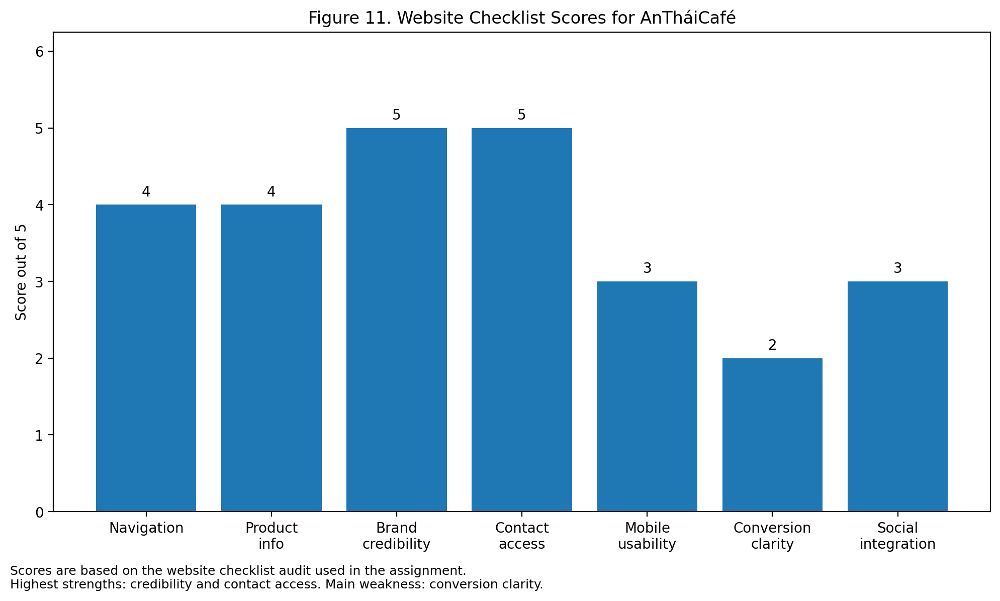

AnTháiCafé · conversion clarity audit
A good website should do more than display information. It should reduce search effort, increase trust, support decision-making, and make action easy.
The stronger website samples you shared also show that high-quality website sections work best when they combine a checklist table with detailed screenshots of product information, reviews, FAQ, contact channels, mobile usability, and navigation.
AnTháiCafé performs well in credibility and information, but more weakly in conversion clarity. The official site provides strong company information, visible product ranges, production claims, and certifications. It also includes contact details and category navigation, which makes the site useful for trust-building and initial exploration. However, several products on the official An Thai site are listed with “Contact” instead of a transparent purchase route, which creates friction for consumer-oriented digital journeys. In a fast-growing Vietnamese e-commerce market, that is a material weakness.
| Criterion | Score /5 | Evidence | Diagnosis |
|---|---|---|---|
| Navigation and information structure | 4 | Clear menus and categories | Strong for browsing |
| Product information | 4 | Product categories and descriptions visible | Good for learning and trust |
| Brand credibility | 5 | Heritage, certifications, export claims, capacity | Major strength |
| Contact accessibility | 5 | Hotline, email, and contact details visible | Strong reassurance |
| Mobile usability | 3 | Likely usable, but needs screenshot confirmation | Moderate |
| Conversion clarity | 2 | “Contact” friction on products | Main weakness |
| Social / platform integration | 3 | Basic integration possible | Underdeveloped commercially |
| Overall effectiveness | 3.7/5 | Informationally strong, commercially weaker | Needs conversion upgrade |
AnTháiCafé is stronger as a trust and information platform than as a frictionless conversion platform.
The most important managerial insight is that An Thai does not need a total redesign first. It needs a conversion-layer improvement. That includes clearer “where to buy” signals, more direct product-level calls to action, stronger landing pages for traffic coming from Facebook, and trust cues positioned closer to the decision point. In short, the site already has enough credibility; the missing piece is commercial clarity.
In the original document, Figures 8 to 10 were left as screenshot placeholders. The website keeps those notes directly from the report rather than inventing replacement visuals.
